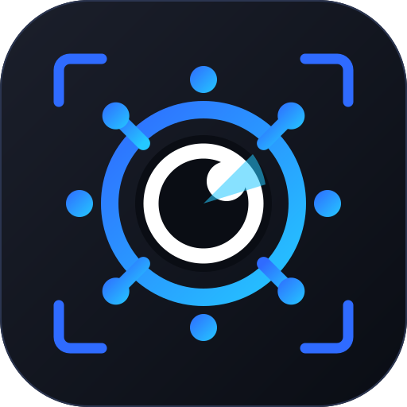

KUBESCOPE · ROUND 06 · APP ICON
The icon
Your logo, made to survive 16 pixels. The full mark has four ideas in it — wheel, eye, scan wedge, brackets — and at dock size two of them vanish. So it is not one drawing scaled down but five drawings, each dropping what the next size cannot hold.

THE LADDER
Five drawings, and what each one gives up
{{ l.size }}
{{ l.t }}
{{ l.drops }}
IN PLACE
Where it actually appears
MACOS DOCK · 128
The one place the full mark is legible. Dark plate, not transparent — a transparent icon on a dark dock loses its edges, and this app is dark-only.
MENU BAR / TRAY · 22 · MONOCHROME
14:22
{{ t.label }}
A template image: one colour plus alpha, so macOS inverts it with the menu bar. The badge is the only exception — the worst state in the fleet, visible with the window closed.
TITLE BAR · TASKBAR · FAVICON · 16
KubeScope
— prod-eu-west · incident
At 16 the wheel is one ring and the eye is a dot. Tested on light and dark chrome, because Windows taskbars and browser tabs are not always dark.
DECISIONS
Six, and one of them is a product decision
{{ d.h }}
{{ d.t }}
FILES
What to build the bundles from
STILL NEEDED FROM YOU
These are SVG. The bundles want rasters: .icns for macOS, .ico for Windows (16/32/48/256 in one file), and PNGs at 16…512 for Linux. Each size should be exported from its own SVG above, not resampled from the 512 — that is the whole point of the ladder.